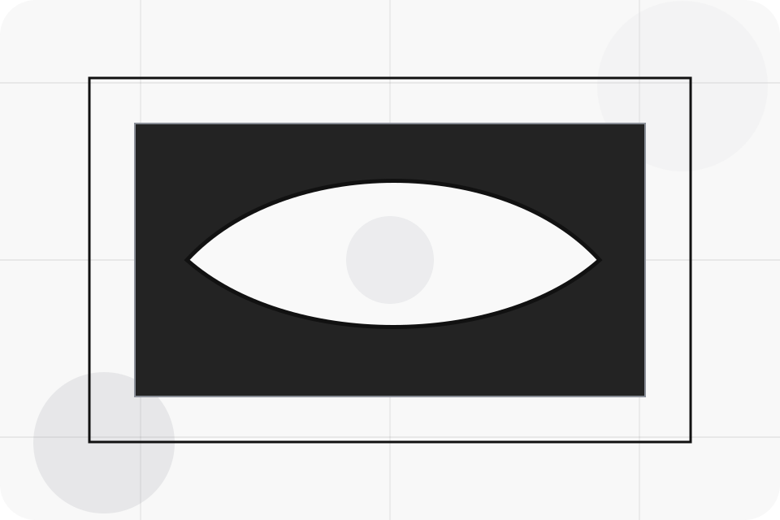
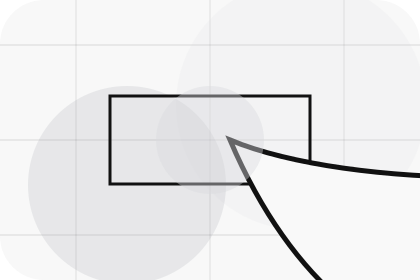
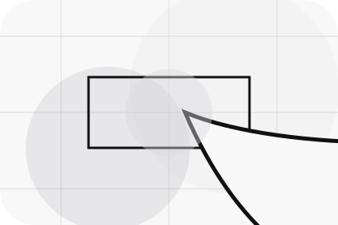
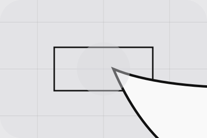

Question
Warranty gives the page a specific angle instead of repeating the navigation label.
FAQ / 01
FAQ opens as a clear automotive decision hub: what Motor offers, who it helps, why it matters, and which route to take first.
The first screen combines positioning, proof, primary action, and fast internal navigation, so people can act immediately or compare the rest of the faq route with context.
Stark vehicle product hero
Select the closest route and Motor keeps the next step, proof, and follow-up expectation aligned with purchase confidence and desire.

FAQ / 02
Warranty handles buying doubts directly so visitors can understand timing, fit, limits, and the safest next step.
Answers are short by design: enough to remove hesitation, not so much that the page turns into documentation before the visitor can act.
Explore FAQWarranty gives the page a specific angle instead of repeating the navigation label.
The precise vehicle cards show what to compare, what to avoid, and what matters most for automotive, vehicles & mobility products visitors.
The final cue points to a useful internal route so the section keeps the journey moving.
FAQ / 03
Testdrive handles buying doubts directly so visitors can understand timing, fit, limits, and the safest next step.
Answers are short by design: enough to remove hesitation, not so much that the page turns into documentation before the visitor can act.
Explore FAQ

Testdrive gives the page a specific angle instead of repeating the navigation label.
FAQ / 04
Documents handles buying doubts directly so visitors can understand timing, fit, limits, and the safest next step.
Answers are short by design: enough to remove hesitation, not so much that the page turns into documentation before the visitor can act.
Explore FAQDocuments gives the page a specific angle instead of repeating the navigation label.
The precise vehicle cards show what to compare, what to avoid, and what matters most for automotive, vehicles & mobility products visitors.
The final cue points to a useful internal route so the section keeps the journey moving.
FAQ / 05
Finance handles buying doubts directly so visitors can understand timing, fit, limits, and the safest next step.
Answers are short by design: enough to remove hesitation, not so much that the page turns into documentation before the visitor can act.
Explore FAQFinance gives the page a specific angle instead of repeating the navigation label.
The precise vehicle cards show what to compare, what to avoid, and what matters most for automotive, vehicles & mobility products visitors.
The final cue points to a useful internal route so the section keeps the journey moving.
FAQ / 06
Booking handles buying doubts directly so visitors can understand timing, fit, limits, and the safest next step.
Answers are short by design: enough to remove hesitation, not so much that the page turns into documentation before the visitor can act.
Book Test DriveMotor structures booking around question, answer, and a clear next route so visitors can compare the block quickly before they book a test drive.
Book Test DriveStark vehicle product hero
Select the closest route and Motor keeps the next step, proof, and follow-up expectation aligned with purchase confidence and desire.
FAQ / 08
Service explains the practical scope, best-fit situations, and expected outcome so automotive visitors can compare options without decoding jargon.
The section keeps the offer concrete: what is included, who it is best for, what decision it supports, and which linked route gives the deeper detail.
Explore FAQWho should use service and when it belongs in the faq journey.
The practical benefit visitors should expect after choosing this route.
Where to compare details, pricing, support, or contact options before committing.
FAQ / 09
Support explains the practical scope, best-fit situations, and expected outcome so automotive visitors can compare options without decoding jargon.
The section keeps the offer concrete: what is included, who it is best for, what decision it supports, and which linked route gives the deeper detail.
Open ContactWho should use support and when it belongs in the faq journey.
The practical benefit visitors should expect after choosing this route.
Where to compare details, pricing, support, or contact options before committing.
FAQ / 10
Motor closes the faq route with a clear action, a quick reminder of the value, and a low-friction way to book a test drive.
Visitors who are ready can use the primary action. Visitors who are still comparing can scan the section links, proof, and support routes before they book a test drive.
Book Test DriveThe final block keeps the choice simple: act now, compare one more proof route, or send enough detail for a focused response.
Book Test Drivepurchase confidence and desire
A vehicle showroom site with precise white space, car-card rhythm, finance paths, and test-drive CTAs. FAQ ends with a direct path to book a test drive, plus enough context for visitors who still need to compare.

Book Test DriveInformation is provided for planning and should be reviewed for the final client, location, and operating rules.